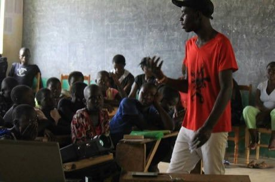
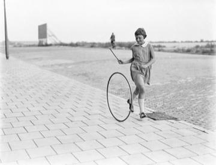

Home / Classical Worlds / Africa: Great Lakes and Indian Ocean
Encyclopedia ID 181
Kitendawili
Kitendawili! - Tega! · Swahili riddle duel


One player calls 'Kitendawili!', the other answers 'Tega!' (set the trap), then a riddle is posed and the guesser has a few tries or gives up a town (a forfeit place) so the riddler reveals the answer.
Heritage note
Part of the living heritage of Kenya.
Origins
Usually placed in the era of Classical Worlds (about 1000 BCE to 500 CE), although its exact origins are uncertain, within the cultural world of Africa: Great Lakes and Indian Ocean.
Sources
Related entries
Kites
Barbados +1 · Dexterity and skill gamesKite flying
Honduras · Dexterity and skill gamesKite fighting
India +2 · Dexterity and skill gamesWau bulan kite
Malaysia · Dexterity and skill gamesNyatiti Luo lyre
Kenya · Musical instruments
Hoop Rolling Trundle
China · Street and playground games